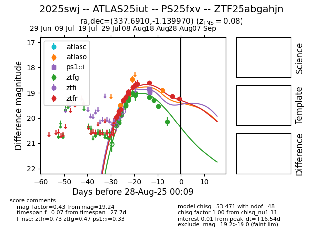

Target 2025swj at 2025-08-28 00:30, see:
FINK: fink-portal.org/ZTF25abgahjn
Lasair: lasair-ztf.lsst.ac.uk/objects/ZTF25abgahjn
ALeRCE: alerce.online/object/ZTF25abgahjn
TNS: wis-tns.org/object/2025swj
YSE: ziggy.ucolick.org/yse/transient_detail/2025swj
alt names
ZTF25abgahjn (ztf,fink)
2025swj (tns,yse)
ATLAS25iut (atlas)
PS25fxv (panstarrs)
coordinates:
equatorial (ra, dec) = (337.6910,-1.13997)
galactic (l, b) = (64.5819,-47.43064)
photometry
last atlaso=18.90, ps1::i=18.97, ztfg=20.14, ztfr=19.24
5 atlaso, 4 ps1::i, 18 ztfg, 16 ztfr detections
